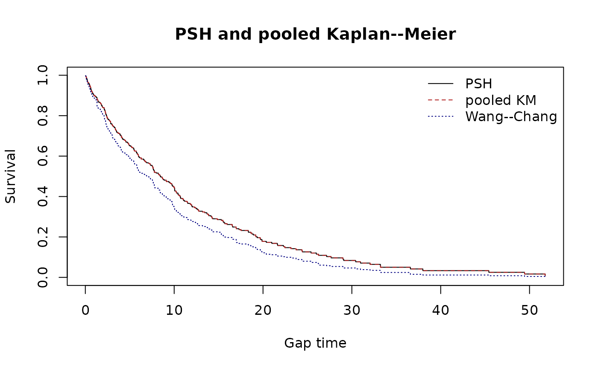
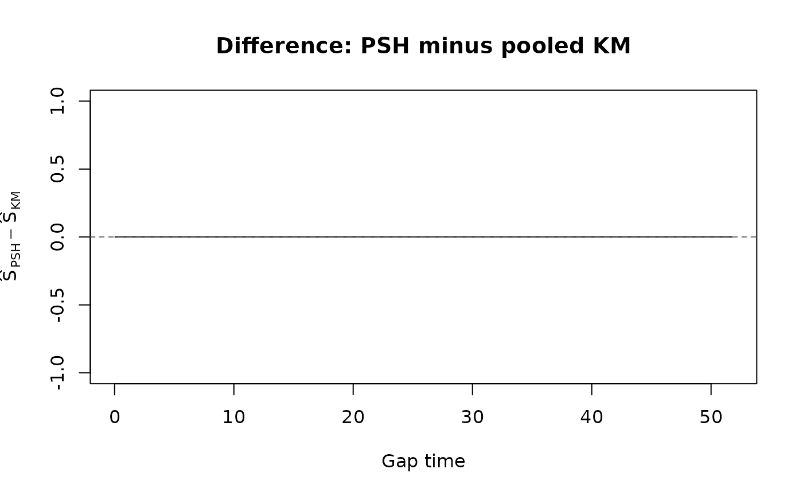

Pena--Strawderman--Hollander reference implementation check
Source:vignettes/psh-reference-check.Rmd
psh-reference-check.RmdEstimator and interpretation
The Pena–Strawderman–Hollander (PSH) generalized product-limit estimator is the pooled Kaplan–Meier curve for all observed gap records. For all subject-gap pairs ,
and
Consequently, psh_surv() and a standard pooled KM
implementation coincide. PSH is motivated by a renewal/IID recurrent-gap
model. This is distinct from Wang–Chang, which gives each subject an
inverse event-count weight to target a marginal recurrent gap-time
distribution.
When PSH and KM agree or differ
PSH and the ordinary pooled gap-record KM do not differ pointwise: both use the same , , and product limit above. The zero PSH–KM difference curve below is therefore an intentional implementation check. They can appear to differ only when “KM” means a different analysis, such as KM of first gaps only, a calendar-time survival analysis, a weighted KM, or an analysis with a different rule for including terminal censoring gaps.
Variance is where the modeling assumptions matter. The
survrec and newTestSurvRec PSH functions
report an independence-style cumulative-hazard approximation,
(a no-ties Greenwood/Nelson–Aalen form). It is appropriate when the
renewal/IID gap assumption and independent censoring make the pooled gap
records behave as independent. It can be too small when gaps within a
subject are correlated or when the number of observed recurrences is
informative. In those settings, Wang–Chang addresses the
point-estimand weighting issue, but its uncertainty still needs
an estimator that accounts for subject clustering (for example,
subject-level resampling); PSH’s independence-style variance is not a
general replacement.
set.seed(20260920)
n_subject <- 100L
n_event <- sample(0:6, n_subject, replace = TRUE)
simulated_gaps <- do.call(rbind, lapply(seq_len(n_subject), function(i) {
k <- n_event[i]
data.frame(
id = i, episode = seq_len(k + 1L), gap = stats::rexp(k + 1L, rate = 1 / 10),
status = c(rep(1L, k), 0L)
)
}))
psh <- psh_surv(simulated_gaps, episode = "episode")
km <- psh_surv(simulated_gaps, episode = "episode")
wc <- wc_surv(simulated_gaps, episode = "episode")
grid <- sort(unique(c(psh$time, wc$time)))
step_value <- function(fit, time) vapply(time, function(t) {
ii <- which(fit$time <= t)
if (length(ii)) fit$surv[max(ii)] else 1
}, numeric(1))
psh_at_grid <- step_value(psh, grid)
km_at_grid <- step_value(km, grid)
wc_at_grid <- step_value(wc, grid)
plot(grid, psh_at_grid, type = "s", ylim = c(0, 1), xlab = "Gap time",
ylab = "Survival", main = "PSH and pooled Kaplan--Meier")
lines(grid, km_at_grid, type = "s", col = "firebrick", lty = 2)
lines(grid, wc_at_grid, type = "s", col = "navy", lty = 3)
legend("topright", c("PSH", "pooled KM", "Wang--Chang"),
col = c("black", "firebrick", "navy"), lty = c(1, 2, 3), bty = "n")
plot(grid, psh_at_grid - km_at_grid, type = "s", xlab = "Gap time",
ylab = expression(hat(S)[PSH] - hat(S)[KM]),
main = "Difference: PSH minus pooled KM")
abline(h = 0, lty = 2, col = "grey40")
The same equality holds with substantially more terminal censoring. For example, the following makes 70% of subjects contribute only their terminal censored gap; the reported difference remains zero because both estimators use the same censored records in their pooled risk set.
set.seed(20260921)
n_event_censored <- sample(0:2, 100, replace = TRUE, prob = c(0.70, 0.20, 0.10))
heavy_censoring <- do.call(rbind, lapply(seq_along(n_event_censored), function(i) {
k <- n_event_censored[i]
data.frame(id = i, episode = seq_len(k + 1L),
gap = stats::rexp(k + 1L, rate = 1 / 10), status = c(rep(1L, k), 0L))
}))
psh_censored <- psh_surv(heavy_censoring, episode = "episode")
km_censored <- psh_surv(heavy_censoring, episode = "episode")
max(abs(psh_censored$surv - km_censored$surv))
#> [1] 0Reference-package simulation check
The following is opt-in because the reference packages are not dependencies.
stopifnot(requireNamespace("survrec", quietly = TRUE),
requireNamespace("newTestSurvRec", quietly = TRUE))
ours <- psh_surv(simulated_gaps, episode = "episode")
survrec_fit <- survrec::psh.fit(
survrec::Survr(simulated_gaps$id, simulated_gaps$gap, simulated_gaps$status)
)
new_test_fit <- newTestSurvRec::PSH.fit(
as.matrix(simulated_gaps[, c("id", "gap", "status")])
)
data.frame(
n_event_times = nrow(ours),
max_abs_psh_vs_survrec = max(abs(ours$surv - survrec_fit$survfunc)),
max_abs_psh_vs_newTestSurvRec = max(abs(ours$surv - new_test_fit$survfunc))
)For the simulation above (100 subjects and 0–6 completed events per subject), all three implementations had 292 event times and maximum absolute survival difference zero at printed precision.
Reference
Pena EA, Strawderman RL, Hollander M (2001). Nonparametric estimation with recurrent event data. Journal of the American Statistical Association, 96, 1299–1315. doi:10.1198/016214501753381887.